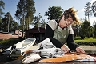

Siw Berit Sofia Fahlgren Berglund
Lärare: Solviks Folkhögskola, Konstlinjen; Konstnär: olja, akryl, grafik, lera m.m..
| Född: | 1943-05-15 Varuträsk 3:24, Skellefteå lfs, Skellefteå sn. [1] |
|---|
| Vigsel: | 1966-07-16. [2] | Vigselförrättare Siws farbror kyrkoherde Erik Fahlgren. |
|---|
| Levde: | 1971 Seminarieg 7, Skellefteå, Sankt Olovs fs, Skellefteå kn. [2] | |
|---|
| Levde: | 1981 Boviken 3:18, Boviken, Skellefteå lfs, Skellefteå kn. [3] | |
|---|
| Levde: | 1991 Boviken 3:18, Boviken 269, Skellefteå lfs, Skellefteå kn. [4] | |
|---|
| : | 2000 Boviksbadet 217, Boviken, Skellefteå lfs, Skellefteå kn. [5] | |
|---|
| Levde: | 2011 Boviksbadet 217, Boviken, Skellefteå lfs, Skellefteå kn. [6] | |
|---|
Noteringar
Siw Berglund har haft flera konstutställningar.
Konstresor utomlands med elever och privat.
Kallar sig för "blomstermålare" efter idé från många framgångsrika Nederländare. Blommor säljer bra bl.a. till kommunens ”25-åringar” dvs. gratifikationer.
Gjort illustrationer och berättelser i Byaboken ¿ Livet vid Boviksfjärden, 2007.
Siw vann mattävlingen, Skellfterätten, 1996
Med några snabba drag med kniven så är dagens fiskskörd filead. Siw Berglund är en fena på fisk och det fick hon bekräftat när hon 1996 vann tävlingen Skellefterätten med "Laxgratäng på Skelleftevis". Under Matfesten sitter hon även i juryn när Årets Skellefteårätt 2009 utses.
BOVIKSBADET
Nästan två gånger per dag äter Siw och maken Nils-Olof fisk. Varannan dag är Nils-Olof ute och vittjar laxfällan, ibland blir det mycket fisk och ibland är den tom. Siw är den som tar hand om fångsten när den nått fastland.
¿ Vi är så otroligt bortskämda med att ha tillgång färsk fisk. Helst äter vi inte det som vi har i frysen, utan måste hitta någon som kan sälja färsk till oss, säger Siw.
Matintresset har alltid varit stort och hon tycker det är roligt att hitta på egna rätter. Hon läser mycket recept, men har dem aldrig framme när hon lagar mat, utan då kombinerar hon det hon läst.
¿ Det brukar vara så att ju färre råvaror man har hemma, ju mer kreativ blir man, säger Siw.
Eftersom hon också är konstnär tycker hon att det är väldigt viktigt att maten är estetisk.
¿ Man äter även med ögat. Det kan vara någon liten finess som gör det vackert, alltid brukar jag hitta på något.
Egentligen var det hennes pappa som tyckte att hon skulle skicka in ett recept till tävlingen om Skellefterätten, för de behövde vinna förstapriset som var en ny spis till stugan.
¿ Jag hade ingen aning om vikter eller mängder, eftersom jag hade receptet i huvudet, säger Siw.
Men resultatet blev lyckat och Siw vann spisen med sin rätt "Laxgratäng på Skelleftevis" med motiveringen "En rätt i tiden med enkla råvaror från orten. Lättlagad, smakrik, kulinarisk". Sammanlagt var 43 bidrag inskickade och 80 procent innehöll lax. Vinsten kom inte som någon överraskning.
¿ Jag blev inte så förvånad när jag vann. Jag tyckte att jag hade det bästa receptet, säger Siw.
Hon berättar att efter tävlingen var hon med i Sveriges Radio Kalmar och berättade om Skellefterätten. Receptet skulle skickas ut till dem som hörde av sig och var intresserade att få det skickat till sig.
¿ Jag träffade senare programledare Jan Silverstolpe och han sa att de var tvungen att betala 20 000 kronor i porto för att skicka ut recepten, skrattar Siw.
På frågan om hon skulle kunna tänka sig att skicka in ett bidrag i år blev svaret trevande.
¿ Jag vet inte hur jag ska kunna hitta på något som är lika bra en gång till. Nog har jag andra rätter men det skulle kännas som jag tävlade mot mig själv.
Siw kommer istället att sitta med i juryn som utser Årets Skellefteårätt 2009 på Matfesten. Hon ersätter Norrans vd Anders Westermark.
¿ Det ska bli kul. Jag ska gå in med allvar i detta för att det är roligt. Samtidigt känns det lite hedersamt, säger Siw Berglund.
Erica Lång
Publicerad 2009-07-01
Emma Nyberg
norran.se/2009/07/arkivet/siwvannmattavlingen1996/
Personhistoria
| Årtal | Ålder | Händelse |
|---|
| 1943 |
|
Födelse 1943-05-15 Varuträsk 3:24, Skellefteå lfs, Skellefteå sn [1] |
| 1966 |
23 år |
Vigsel Nils-Olof Berglund 1966-07-16 [2] |
| 1971 |
|
Levde Nils-Olof Berglund 1971 Seminarieg 7, Skellefteå, Sankt Olovs fs, Skellefteå kn [2] |
| 1981 |
|
Levde Nils-Olof Berglund 1981 Boviken 3:18, Boviken, Skellefteå lfs, Skellefteå kn [3] |
| 1991 |
|
Levde Nils-Olof Berglund 1991 Boviken 3:18, Boviken 269, Skellefteå lfs, Skellefteå kn [4] |
| 2000 |
|
Nils-Olof Berglund 2000 Boviksbadet 217, Boviken, Skellefteå lfs, Skellefteå kn [5] |
| 2011 |
|
Levde Nils-Olof Berglund 2011 Boviksbadet 217, Boviken, Skellefteå lfs, Skellefteå kn [6] |
Källor
| [1] | SCB Födda AC Skellefteå lfs 144/1943, Mtl Västerbottens län 1971 |
| |
| | |
| [2] | Mtl Västerbottens län 1971 |
| |
| | |
| [3] | Mtl Västerbottens län 1981 |
| |
| | |
| [4] | Mantalslängd 1991, Västerbottens län |
| |
| | |
| [5] | N-O Berglund |
| |
| | |
| [6] | www.hitta.se, www.ratsit.se |
| |
|
|  |
1996. Siw Berglund, konstnär och en "fena" på laxgratäng.
Foto: Lars Eriksson, Norran.se
|
|
{kind=link}